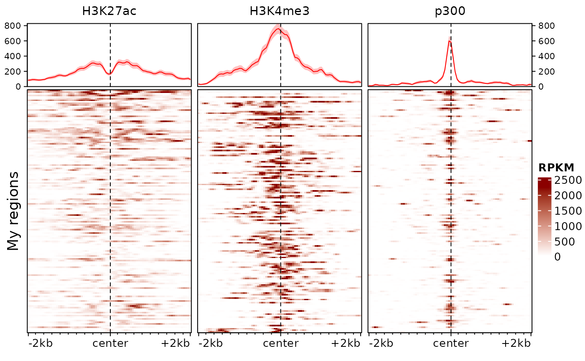
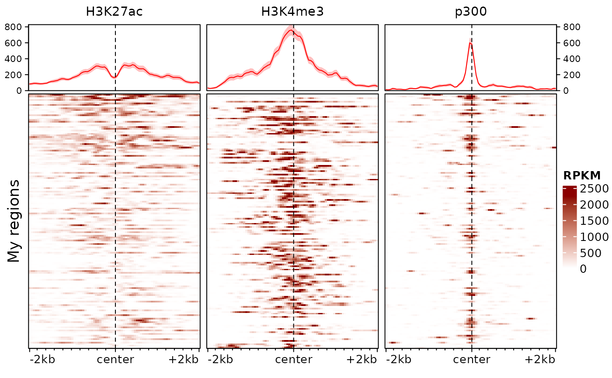

plotEnrichedHeatmaps: Plots heatmaps of signals around a set of regions
plotEnrichedHeatmaps.RdPlots enrichment heatmaps from the output of signal2Matrix
(i.e. an EnrichmentSE object or a list of signal matrices). This is a
convenience wrapper around EnrichedHeatmap.
Usage
plotEnrichedHeatmaps(
ml,
trim = c(0.02, 0.98),
assay = 1L,
colors = inferno(100),
scale_title = "density",
column_title = NULL,
multiScale = NULL,
column_title_gp = gpar(fontsize = 11),
row_order = NULL,
cluster_rows = FALSE,
row_split = NULL,
axis_name = NULL,
minRowVal = 0,
scale_rows = FALSE,
top_annotation = TRUE,
left_annotation = NULL,
right_annotation = NULL,
mean_color = "red",
mean_scale_side = NULL,
mean_trim = TRUE,
show_heatmap_legend = TRUE,
use_raster = NULL,
...
)Arguments
- ml
A named matrix list as produced by
signal2Matrix, or an `EnrichmentSE` object.- trim
The quantile above which to trim values for the colorscale. If a numeric vector of length 2, will be used as lower and upper quantiles beyond which to trim.
- assay
Assay to use (ignored unless `ml` is an ESE object)
- colors
The heatmap colors to use, a vector of at least two colors between which to interpolate. Can also be a list of such color scales, with as many slots as there are tracks in `ml`.
- scale_title
The title of the scale. Ignored if `multiScale=TRUE`.
- multiScale
Logical; whether to use a different scale for each track. Defaults to TRUE is `colors` is a list, otherwise FALSE.
- column_title_gp
Graphic parameters of the column titles (see
gpar)- row_order
Optional order of the rows.
- cluster_rows
Whether to cluster rows.
- row_split
Splitting of rows.
- axis_name
A vector of length 3 giving the labels to put respectively on the left, center and right of the x axis of each heatmap.
- minRowVal
Minimum value a row should have to be included
- scale_rows
Whether to scale rows, either FALSE (default), 'local' (scales each matrix separately) or 'global'.
- top_annotation
Either a logical indicating whether or not to plot the summary profile at the top of each heatmap, a named list of parameters to be passed to `anno_enrich`, or a
HeatmapAnnotation-classobject that will be passed toEnrichedHeatmap. Additionally, if `ml` is a `ESE` object, `top_annotation` can be a vector of colData column names.- left_annotation
Passed to
EnrichedHeatmap- right_annotation
Passed to
EnrichedHeatmap- mean_color
Color of the mean signal line in the top annotation. If `row_split` is used, `mean_color` can be a named vector indicating the colors for each cluster. Can also be a `gpar` object.
- mean_scale_side
The side on which to show the y-axis scale of the mean plots. Either "both" (default), "left", "right", or "none".
- show_heatmap_legend
Logical, whether to show the heatmap legend
- use_raster
Logical; whether to render the heatmap body as a raster image. Turned on by default if any of the matrix dimensions is greater than 2000.
- ...
Passed to
EnrichedHeatmap- Logical;
whether to apply the trimming also to the mean plot.
Details
When plotting large matrices, the heatmap body will be rasterized to keep its memory footprint decent. Depending on your settings, if the heatmap is very big you might hit the preset limits of `magick` base rasterization, which could result in an error such as 'Image must have at least 1 frame to write a bitmap'. In such cases, you might have to degrade to a lower-quality rasterization using the additional arguments `raster_by_magick=FALSE, raster_device="CairoJPEG"` .
Examples
# we first fetch the path to the example bigwig file:
bw <- system.file("extdata/example_atac.bw", package="epiwraps")
# Since we only have one, we'll use the same and pretend they're 2 samples:
bw <- c(sample1=bw, sample2=bw)
# we next load regions of interest (either GRanges or path to a bed file):
regions <- system.file("extdata/example_peaks.bed", package="epiwraps")
# we obtain the matrix of the signal around the regions:
m <- signal2Matrix(bw, regions)
#> Reading /home/runner/work/_temp/Library/epiwraps/extdata/example_atac.bw
#> Reading /home/runner/work/_temp/Library/epiwraps/extdata/example_atac.bw
plotEnrichedHeatmaps(m)
 # we could also just plot one with:
# plotEnrichedHeatmaps(m[,1])
# or change the aesthetics, e.g.:
plotEnrichedHeatmaps(m, trim=0.98, scale_title="RPKM",
colors=c("white","darkred"))

# any argument accepted by `EnrichedHeatmap` (and hence by
# `ComplexHeatmap::Heatmap`) can be used, e.g.:
plotEnrichedHeatmaps(m, row_title="My regions of interest")
# we could also just plot one with:
# plotEnrichedHeatmaps(m[,1])
# or change the aesthetics, e.g.:
plotEnrichedHeatmaps(m, trim=0.98, scale_title="RPKM",
colors=c("white","darkred"))

# any argument accepted by `EnrichedHeatmap` (and hence by
# `ComplexHeatmap::Heatmap`) can be used, e.g.:
plotEnrichedHeatmaps(m, row_title="My regions of interest")